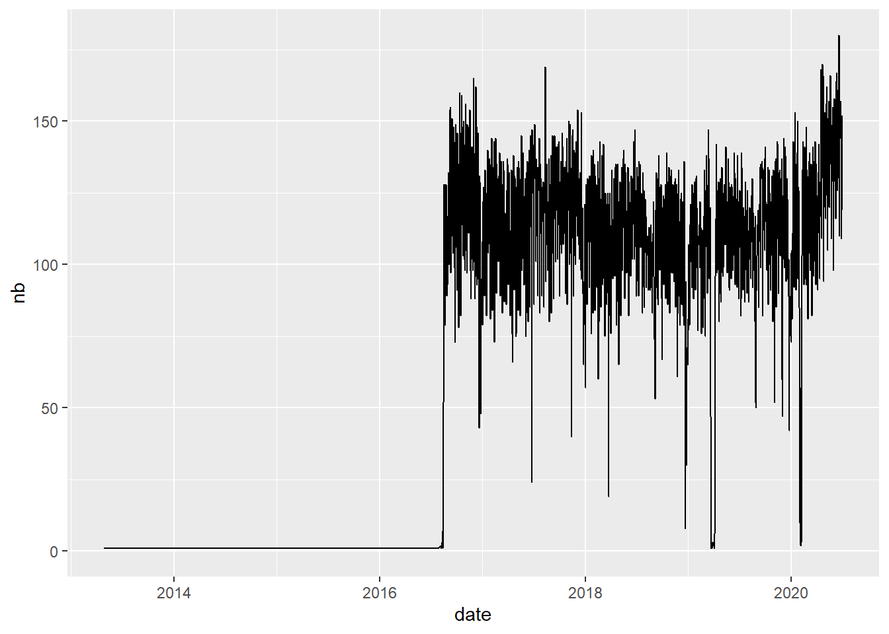

Chapter 4 Data Check and Clean
library(knitr)
knitr::opts_chunk$set(echo = TRUE, warning = FALSE, message = FALSE)
library(quanteda)
library(dplyr)
library(ggplot2)
library(tidytext)In this chapter, we describe the different operation of checking and cleaning that should be necessarily realized before any sound exploration of corpus. The majority of the procedures described here can not be done automatically and implies a human expertise at each step in order to control the results and propose remediations in case of problems.
4.1 Prerequites : quanteda (or tidytext)
The operations will be realized jointly with the two packages quanteda and tidytext. In the majority of case, we will use quanteda but in some specific situations tidytext will appear more adapted and will be used, thanks to (relatively) easy possibilities of exchange between the two format of dta storage of corpora.
- The reader non familiar with quanteda should have a look at Quick Start available on the website of the project :
https://quanteda.io/articles/quickstart.html
- The reader non familiar with tidytext will find detailed explnation in the following book :
https://www.tidytextmining.com/
We start by loading the corpus of news from the french newspaper Sud-Ouest that has been extract from .csv and transform in quanteda corpus in the previous chapter (ref). we also transform the time variable in date and sort the news by historical order.
qd<-readRDS("_data/qd/stories_41372.Rdata")
qd$date<-as.Date(qd$date)
qd<-qd[order(qd$date)]
str(qd)## 'corpus' Named chr [1:81653] "« Sud Ouest » : Pierre Veilletet est mort.\n." ...
## - attr(*, "names")= chr [1:81653] "text66408" "text77986" "text78223" "text66409" ...
## - attr(*, "docvars")='data.frame': 81653 obs. of 4 variables:
## ..$ docname_: chr [1:81653] "text66408" "text77986" "text78223" "text66409" ...
## ..$ docid_ : Factor w/ 81653 levels "text1","text2",..: 66408 77986 78223 66409 2245 55308 23528 70312 63946 64 ...
## ..$ segid_ : int [1:81653] 1 1 1 1 1 1 1 1 1 1 ...
## ..$ date : Date[1:81653], format: "2013-01-08" "2013-01-10" ...
## - attr(*, "meta")=List of 3
## ..$ system:List of 5
## .. ..$ package-version:Classes 'package_version', 'numeric_version' hidden list of 1
## .. .. ..$ : int [1:3] 2 1 0
## .. ..$ r-version :Classes 'R_system_version', 'package_version', 'numeric_version' hidden list of 1
## .. .. ..$ : int [1:3] 4 0 2
## .. ..$ system : Named chr [1:3] "Windows" "x86-64" "CIST"
## .. .. ..- attr(*, "names")= chr [1:3] "sysname" "machine" "user"
## .. ..$ directory : chr "C:/claude/git/newsbook"
## .. ..$ created : Date[1:1], format: "2020-07-08"
## ..$ object:List of 1
## .. ..$ unit: chr "documents"
## ..$ user :List of 7
## .. ..$ media_id : int 41372
## .. ..$ media_name : chr "Sud Ouest"
## .. ..$ media_url : chr "http://www.sudouest.fr/"
## .. ..$ media_country: chr "FRA"
## .. ..$ data_source : chr "Media Cloud "
## .. ..$ data_time : chr "Special extraction"
## .. ..$ data_author : chr "Elaborated by Claude Grasland"This structure of data appears a bit tricky at first glance (especially for old user of quanteda that has experimented modification between version 1 and 2 …) but it offers very good guaranties of quality and efficiency. As explained by the author of the quanteda package :
A corpus is designed to be a “library” of original documents that have been converted to plain, UTF-8 encoded text, and stored along with meta-data at the corpus level and at the document-level. We have a special name for document-level meta-data: docvars. These are variables or features that describe attributes of each document.A corpus is designed to be a more or less static container of texts with respect to processing and analysis. This means that the texts in corpus are not designed to be changed internally through (for example) cleaning or pre-processing steps, such as stemming or removing punctuation. Rather, texts can be extracted from the corpus as part of processing, and assigned to new objects, but the idea is that the corpus will remain as an original reference copy so that other analyses – for instance those in which stems and punctuation were required, such as analyzing a reading ease index – can be performed on the same corpus.
With the new data structure it is for example easy to extract a specific text from the corpus with an extractor, called texts(). We can also have an easy access to information associated to each document like the date in our example. For example the news 666 is defined by :
## text49394
## "Béarn : un technicien électrocuté par une ligne à 63 000 volts.\n.Le technicien, qui était sur une nacelle, aurait été victime d’un arc électrique. La police a ouvert une enquête.Un dramatique accident s’est produit jeudi après-midi vers 16 h 30 sur le site Euralis à Lescar. Un homme est mort électrocuté alors qu’il travaillait sur une nacelle à une dizaine de mètres du sol, à... Lire la suite"## [1] "2013-04-19"For those who really don’t want to use quanteda, it is also simple to convert it to other format and in particular a simple data.frame where we can find only the id of document, the text and the document level information. But we have lost all the other information like the document metadata.
## doc_id
## 1 text66408
## 2 text77986
## 3 text78223
## 4 text66409
## 5 text2245
## 6 text55308
## text
## 1 « Sud Ouest » : Pierre Veilletet est mort.\n.
## 2 Municipales à Pau : Bayrou entretient le suspense.\n.
## 3 Algérie : Yann Desjeux, l’otage originaire du Pays basque, tué vendredi.\n.
## 4 Bègles : il avait conçu et réalisé le dernier album d’Yvette Horner.\n.
## 5 Le football pleure Jacques Grimonpon.\n.
## 6 Mariage pour tous : Jean Lassalle a dit non.\n.
## date
## 1 2013-01-08
## 2 2013-01-10
## 3 2013-01-18
## 4 2013-01-20
## 5 2013-01-25
## 6 2013-02-124.2 CHECK 1 : length of texts
We can use the summary command applied to the whole corpus in order to obtain for each text the number of sentences and words. This operation can take some time because quanteda will proceed to a tokenization of the corpus. We suggest to store this information in the quanteda object.
# Compute number of sentences and tokens
tokeninfo <- summary(qd,length(qd))
#store in quanteda object
docvars(qd, field="Tokens")<-tokeninfo$Tokens
docvars(qd, field="Sentences")<-tokeninfo$Sentences
# Visualize
head(docvars(qd))## date Tokens Sentences
## 1 2013-01-08 11 1
## 2 2013-01-10 10 1
## 3 2013-01-18 15 1
## 4 2013-01-20 14 1
## 5 2013-01-25 7 1
## 6 2013-02-12 11 14.2.1 Number of sentences
| x | Freq |
|---|---|
| 1 | 1950 |
| 2 | 287 |
| 3 | 12772 |
| 4 | 30262 |
| 5 | 23324 |
| 6 | 9578 |
| 7 | 2719 |
| 8 | 568 |
| 9 | 141 |
| 10 | 37 |
| 11 | 11 |
| 12 | 2 |
| 18 | 1 |
| 57 | 1 |
The distribution appears regular with the exception of a very strange news with 57 sentences. It appears as a single case of full text ! We decide therefore to eliminate all texts with length > 10 sentences and visualize the result.

N.B. At this point, it is also possible to harmonize the number of sentences in the datasets.But rather than deleting the “long” texts", it appears better to keep only the k first sentences of each text with the corpus_reshape function. This function can transform the initial text in sentences but also do the reverse operation. So, our program could look like this. Note that the operation can take some time on large corpora.
4.2.2 Number of tokens
 One more time, we observe some strange behavior with some very short news. We can therefore decide to harmonize and keep only the news with a value of 50 to 125 tokens.
One more time, we observe some strange behavior with some very short news. We can therefore decide to harmonize and keep only the news with a value of 50 to 125 tokens.
qd<-corpus_subset(qd,Tokens>50)
qd<-corpus_subset(qd,Tokens<125)
p<-ggplot(docvars(qd),aes(x=Tokens))+geom_histogram(stat_bin=25)
p
4.3 CHECK 2 : Time distribution
The second step is to verify the stability of the news through times, in terms of frequencies. The main danger here is the risk to observe discontinuities in the distribution which could induce biases in the comparison of evolution through time.
4.3.1 News without date
After a check of the time distribution of news, we eliminate the news without date
## Min. 1st Qu. Median Mean 3rd Qu. Max.
## "2013-03-18" "2015-06-23" "2017-06-12" "2017-02-11" "2018-10-24" "2019-12-31"
## NA's
## "9"4.3.2 Distribution of news through time
We introduce a function when_count for an easier extraction of time series with different levels of time span. The interest of this function is to add zero value for time period where no news has been observed, which would not be the case with a simple table function.
#### ---------------- when_count -----------------
#' @title identify number of news per time period
#' @name when_count
#' @description count the numbers of news per time period and add zero for missing period
#' @param corpus a corpus of news (in qd format) with a column "time"
#' @param span a time period of aggregation (days, weeks, months, year)
when_count<-function(corpus = qd, span = 'weeks' )
{
# corpus<-qd
# span<-"weeks"
time<-docvars(corpus,"date")
tab<-tibble::tibble(date=as.Date(time))
item_date <- tab %>%
group_by(date = cut(date, span, start.on.monday = TRUE)) %>%
summarise(nb = n())
item_date$date <- as.Date(item_date$date)
all_date<-data_frame(date=seq(min(as.Date(item_date$date)),max(as.Date(item_date$date)),span))
tem_date<-left_join(all_date,item_date)
item_date$nb[is.na(item_date$nb)]<-0
return(item_date)
}4.3.2.1 daily distribtion
news_by_day<-when_count(qd,span="days")
p<-ggplot(news_by_day, aes(x=date, y=nb)) + geom_line()+ scale_y_continuous(limits=c(0,max(news_by_day$nb)))
p
We obtain here a relatively good results with news published every day during the period. But we can also notice a trend of increase of the number of news through time with approx. 20 news/day in 2013 against approx. 40 news per day in 2019.
4.3.2.2 weekly distribtion
news_by_week<-when_count(qd,span="weeks")
p<-ggplot(news_by_week, aes(x=date, y=nb)) + geom_line() + scale_y_continuous(limits=c(0,max(news_by_week$nb)))
p The analysis by week reveals only two perturbation of the flow during the week of 5 December 2016 and the final week of december 2019. As a whole (and compare to many other newspapers), these flow appears pretty good !
The analysis by week reveals only two perturbation of the flow during the week of 5 December 2016 and the final week of december 2019. As a whole (and compare to many other newspapers), these flow appears pretty good !
4.4 CHECK 3 : Suspect words
A classical problem with the news collected from RSS is the existence of sequence of words that are not related to news itself but to newspaper structure. For example, the systematic addition of a copyright ((c) the Journal) or the introduction of references (See also) and many other things that can be considered as external to the message provided by the news itself. Here they are no miracle solution that can produce an automatic correction. But some technics can help the analyst to simplify the task of correction.
4.4.1 Tips 1 : simple word fequencies
A simple analysis of most frequent tokens can help to discover suspect words.
toks<-tokens(qd, remove_numbers = TRUE, remove_punct = TRUE, remove_separators =TRUE)
dfm <- dfm(toks, remove = stopwords("french"))
top10<-textstat_frequency(dfm,n=10)
kable(top10)| feature | frequency | rank | docfreq | group |
|---|---|---|---|---|
| suite | 79775 | 1 | 77526 | all |
| lire | 77770 | 2 | 77526 | all |
| a | 71430 | 3 | 45400 | all |
| ans | 18841 | 4 | 12945 | all |
| après | 16275 | 5 | 13548 | all |
| plus | 15848 | 6 | 11928 | all |
| france | 14308 | 7 | 9545 | all |
| deux | 13897 | 8 | 9939 | all |
| d’un | 12290 | 9 | 9975 | all |
| lundi | 10647 | 10 | 8552 | all |
The simple examination of the top 10 reveals the existence of two suspect words lire and suite. They can be explained bythe existence of the string … Lire la suite at the end of the majority of news. For example :
## text70739
## "Drame de Port-Royal : la maternité blanchie par une enquête interne.\n.La mort du foetus n'était pas prévisible et les urgences n'étaient pas saturées, selon les résultats de l'enquête rendus publics.\"Pas d'erreur médicale\" La maternité de Cochin-Port-Royal a été blanchie par une enquête interne \"exceptionnelle\" diligentée à la suite de la perte de son bébé par une patiente qui avait... Lire la suite"4.4.2 Tips 2 : most frequent n-grams
Another approach consist in the extraction of most frequent n-grams i.e. couples of words frequently associated. This can be done with various value of n. But it is generally sufficient to check for n= 2, 3 or 4.*
bigram<-tokens_ngrams(toks,n=c(2))
dfm2<-dfm(bigram)
top10<-textstat_frequency(dfm2,n=10)
kable(top10)| feature | frequency | rank | docfreq | group |
|---|---|---|---|---|
| la_suite | 78165 | 1 | 77526 | all |
| lire_la | 77528 | 2 | 77526 | all |
| de_la | 44035 | 3 | 30025 | all |
| à_la | 16397 | 4 | 13228 | all |
| a_été | 15775 | 5 | 12519 | all |
| dans_le | 12315 | 6 | 10187 | all |
| de_ans | 9415 | 7 | 6988 | all |
| dans_la | 8947 | 8 | 7564 | all |
| sur_la | 7316 | 9 | 6131 | all |
| ont_été | 7054 | 10 | 5923 | all |
Here, the conclusion is clear concerning our usual suspect. We can therefore proceed to the elimination of the problem with a regular expression
4.5 CHECK 4 : Human expertise
All the previous check can not replace human expert. Therefore, we strongly suggest to examine a random sample of texts extract from the news in order to have an empirical view on the texts that will be further subject to time consuming analysis. It is certainly not a vaste of time to discover issues early and avoid to replicate the whole work (pity for the climate !).
A random sample of news can be easily extracted with corpus_sample function. Let’s take a sample of 10 here (but 100 would be certainly better)
## text37303
## "Orages en Gironde : des vignes touchées par la grêle, \"un visage de désolation\".\n.L'orage de grêle qui est remonté dans le Nord du département a haché le sud de l'appellation des vins de Blaye, et une grande partie de sa voisine de Bourg. Le Sud Médoc serait aussi touché. .Une heure après le passage de l'orage de grêle en Gironde, Franck Jullion le président de l'appellation \"Blaye Côtes de..."
## text27692
## "XV de France : \"De la pression comme hier, il n'en ont jamais connu autant\".\n.\n En marge d'une réunion entre la région Occitanie et France 2023, Bernard Laporte a témoigné sa satisfaction suite à la première victoire des Bleus. \"Il n'y a pas de soulagement. Ce n'est pas fini ! Il reste encore trois matchs.\" Bernard Laporte, le président de la FFR, a glissé quelques mots ce dimanche au lendemain de..."
## text67551
## "Deux collisions tramway-voiture ce mardi matin à Bordeaux et Pessac.\n.Dans les deux cas, les dégâts ne sont que matériels.Un accident de la circulation a eu lieu ce mardi matin sur la ligne C du tramway. Une rame est entrée en collision avec une voiture à 8h30, rue Emile-Counord, à Bordeaux. La circulation a été interrompue dans les deux sens jusqu'à 9h30 entre les stations Grand-Parc et Les..."
## text71428
## "\"Tu vois, les chambres à gaz... dommage\" : Dieudonné jugé ce mercredi.\n.L'humoriste et polémiste est jugé pour provocation à la haine raciale après ses propos sur Patrick Cohen en décembre 2013. Il risque un an de prison.Dieudonné est jugé mercredi par le tribunal correctionnel de Paris pour provocation à la haine raciale suite à des propos sur le journaliste de France Inter Patrick Cohen il..."
## text52402
## "Affaire Benalla : durcissement des règles d'octroi des badges à l'Assemblée.\n.Les badges seront désormais visés par le président de l'Assemblée et consultable par une instance collégiale.Le bureau de l'Assemblée nationale a voté mercredi, \"à l'unanimité moins une voix\", des règles d'attribution plus restrictives des badges pour les membres des cabinets de l'exécutif, selon un communiqué de la..."
## text80256
## "Pays basque : piégées dans leur voiture par la montée des eaux.\n.Une femme de 38 ans et une fillette de 9 ans ont été secourues par les pompiers, dimanche soir, à Cambo-les-Bains.Dimanche, peu avant 22 heures, les pompiers sont intervenus à Cambo-les-Bains pour porter secours aux deux passagères d'un véhicule pris au piège par la montée des eaux.\n\nUne femme de 38 ans ainsi qu'une..."
## text34734
## "Les raisons \"accablantes\" qui ont poussé Arnaud Montebourg à licencier Alexandre Benalla.\n.Alexandre Benalla avait travaillé cinq semaines pour Arnaud Montebourg, en 2012, avant d'être licencié pour \"son incapacité à occuper les fonctions exposées du chauffeur personnel du Ministre\".Alexandre Benalla aurait-il dû être écarté dès le départ par l'Élysée ? C'est la question que pose Arnaud Montebourg, ancien..."
## text26650
## "Gers : accident de car scolaire, 26 collégiens blessés dont 3 très grièvement.\n.La préfecture du Gers a déclenché le plan NOVI (Nombreuses victimes) .Vingt-six collégiens ont été blessés dont trois très grièvement dans un accident entre un car scolaire et une voiture jeudi vers 13 heures sur une route nationale du Gers à Eauze.\n\nLe bus scolaire, qui transportait 45 enfants et 4 accompagnateurs,..."
## text67113
## "Trains : trafic très perturbé le 1er janvier, légère amélioration pour jeudi.\n.\n Le mouvement contre la réforme des retraites se poursuit à la SNCF. Un TGV sur 3 et 2 TER sur 10 en Nouvelle-Aquitaine devraient circuler mercredi 1er janvier. Jeudi, la moitié des TGV circulera ainsi que 4 TER sur 10 Il y a des choses qui ne vont pas changer tout de suite malgré la nouvelle année. Les perturbations de..."
## text77249
## "Girondins : la mère de Samuel Kalu a été libérée par ses ravisseurs au Nigeria.\n.Celle-ci était détenue depuis la semaine dernière par des kidnappeurs qui réclamaient une rançon à la famille du footballeur bordelais.La mère de Samuel Kalu, international de l'équipe nationale nigériane des Super Eagles et joueur des Girondins de Bordeaux, a été libérée après près d'une semaine aux mains de ses..."The sample appears correct but some corrections could be added. We could for example eliminate the double quotes that will complicate the analysis of text. We could also decide to eliminate the final sentences that are not completed, etc. But it can also be important to keep the text as similar as possible to the initial one and to delay these final check to the next chapter where the data will be focused on a specific question.
The last step here is to store the clean file for further use.